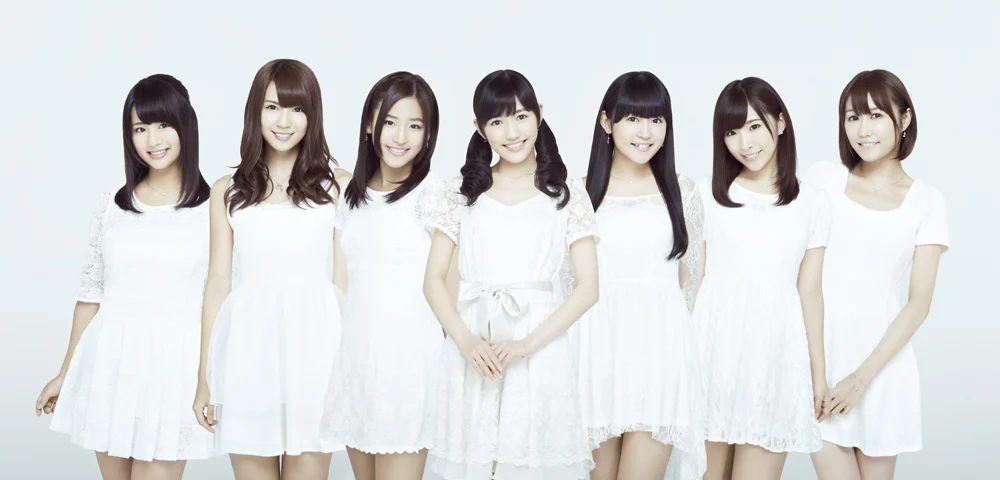

ノースリーブス
メンバー
高橋みなみ、峰岸みなみ、小嶋陽菜
チームAで結成された３人組のユニット。略称は、no3b
ノースリーブスの結成前から「純愛のクレッシェンド」「Bye Bye Bye」でユニットを組んでいた。
- 1. Relax!
- 2008年11月26日
- 2. タネ
- 2009年3月18日
- 3. キスの流星
- 2009年11月25日
- 4. lie
- 2010年4月21日
- 5. 君しか
- 2010年8月4日
- 6. Answer
- 2011年3月2日
- 7. 唇 触れず…
- 2011年6月29日
- 8. ペディキュアday
- 2011年12月28日
- 9. キリギリス人
- 2013年1月16日
- 1. 3seconds
- 2008年11月1日、ペルソナ名義
- 2. クリスマスプレゼント
- 2008年12月19日、ペルソナ名義
- 3. ペロリとぺぺロ
- 2011年7月6日、高橋みなみソロ：作詞 峰岸みなみ
- ノースリーブス
- 2011年1月1日
- 「Relax!」プレ・リリース・イベント
- 2008年10月18日：お台場メディアージュ
- Thank! Relax!
- 2008年11月26日：東京ドームシティ ラクーアガーデンステージ
- 「Answer」発売記念イベント
- 2011年3月2日：SHIBUYA-AX
- 「唇 触れず…」発売記念イベント
- 2011年6月30日：恵比寿ガーデンホール
- ノースリーブス6thシングル発売記念特別公演～丸ごとno3b!!～「Answer」編
- 2011年8月10日：横浜BLITZ
- Yahoo!JAPAN prezents ノースリーブス from AKB48 スペシャルライブ
- 2011年11月2日：ディファ有明
- 「ペディキュアday」発売記念イベント
- 2012年1月4日：Zepp Tokyo
- 「キリギリス人」発売記念イベント
- 2013年1月19日：ディファ有明
- ノースリーブス 10th ANNIVERSARY～丸ごとno3b!!
- 2018年11月26日：EXシアター六本木
- ノースリーブス 15th Anniversary Live
- 2023年11月25日：Zepp Haneda
シングル
配信限定
アルバム
ライブイベント
渡り廊下走り隊7

2008年、渡辺麻友、多田愛佳、仲川遥香の3人が「お菓子なシスターズ」として、NHK教育テレビ「味楽る！ミミカ」のエンディング曲「恋のチューイング」を担当し、後に平島夏美が加わって「渡り廊下走り隊」を結成。2010年に菊地あやかが加わり、5人組となり、さらにその年、岩佐美咲と小森美香が加入して「渡り廊下走り隊7」となる。2012年に平島夏美がAKB48の活動辞退し、暫定的に浦野一美が加入する。
- 1. 初恋ダッシュ／青い未来
- 2009年1月28日
- 2. やる気花火
- 2009年4月22日
- 3. 完璧ぐ～のね
- 2009年11月11日
- 4. アッカンべー橋
- 2010年3月17日
- 5. 青春のフラッグ
- 2010年6月30日
- 6. ギュッ
- 2010年9月1日
- 7. バレンタイン・キッス
- 2011年2月2日
- 8. へたっぴウィンク
- 2011年8月3日
- 9. 希望山脈
- 2011年11月30日
- 10. 少年よ 嘘をつけ！
- 2012年5月30日
- 廊下は走るな！
- 2010年10月13日
- 渡り廊下をゆっくり歩きたい
- 2013年12月25日
- 渡り廊下走り隊 解散コンサート
- 2014年9月3日